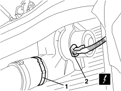
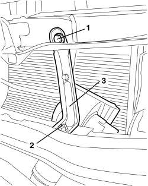
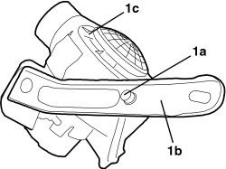

5530A52 ALTERNATOR COOLING FAN - R.R.
- Path
- Procedures > 55 ELECTRICAL EQUIPMENT > 5530 CURRENT GENERATION > 5530A ALTERNATOR AND COMPONENTS > 5530A52 ALTERNATOR COOLING FAN - R.R.
- Kind
- repair procedure (removal / refitting; the operation number is the code)
- Applies to
- engines: 3.2 JTS; all production periods
- Interactive page
- https://sloeber94.github.io/elrnDB-aBrrSpdr/en/#/946004053
Applies to: engines: 3.2 JTS; all production periods
 Removing
Removing
 Refitting
RefittingOp. 7055B54 UNDER ENGINE PROTECTION/GUARD - R.R.
1. Open the band securing the fan assembly to the pipe.
2. Detach the electrical connection.

Applies to: engines: 3.2 JTS; all production periods
1. Undo the upper bolt.
2. Undo the lower nut.
3. Extract the fan assembly.

Applies to: engines: 3.2 JTS; all production periods
1. If necessary, undo the bolt (1a) and separate the bracket (1b) from the fan assembly (1c).

Applies to: engines: 3.2 JTS; all production periods
Refitting
Removing- Check that the fan assembly is not damaged.
- If separated, secure the bracket with the bolt.
- Place the fan assembly in position and fasten it using the nut and bolt.
- Attach the electrical connection.
- Tighten the band.
- Check that the fan is working properly.